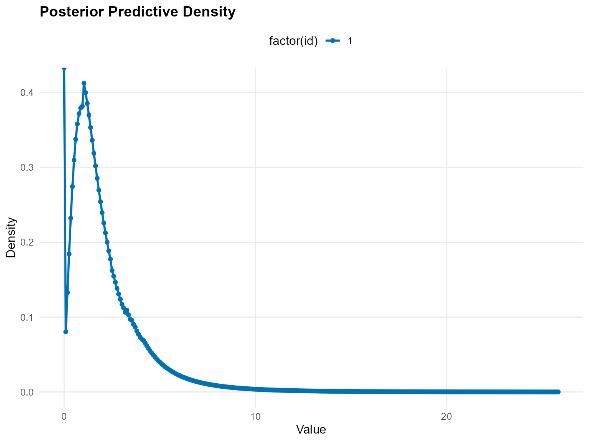
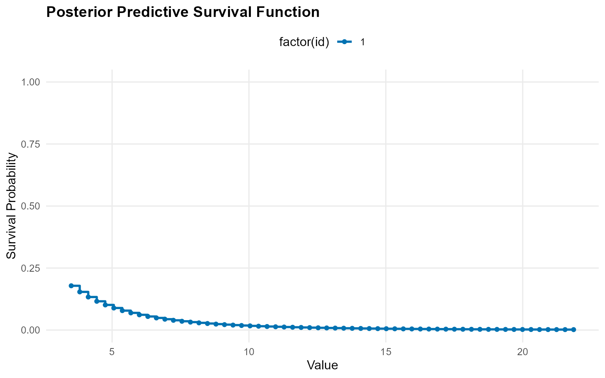
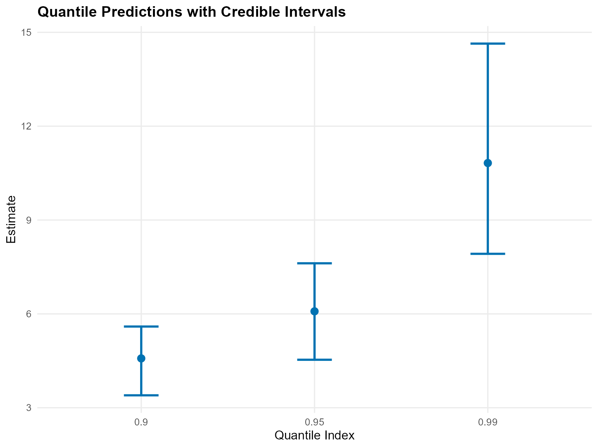
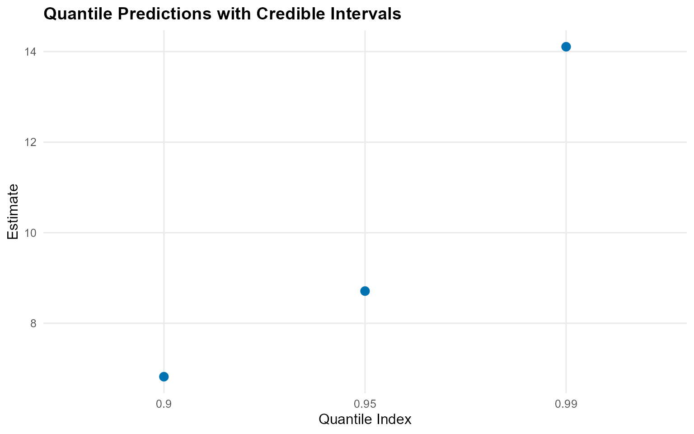
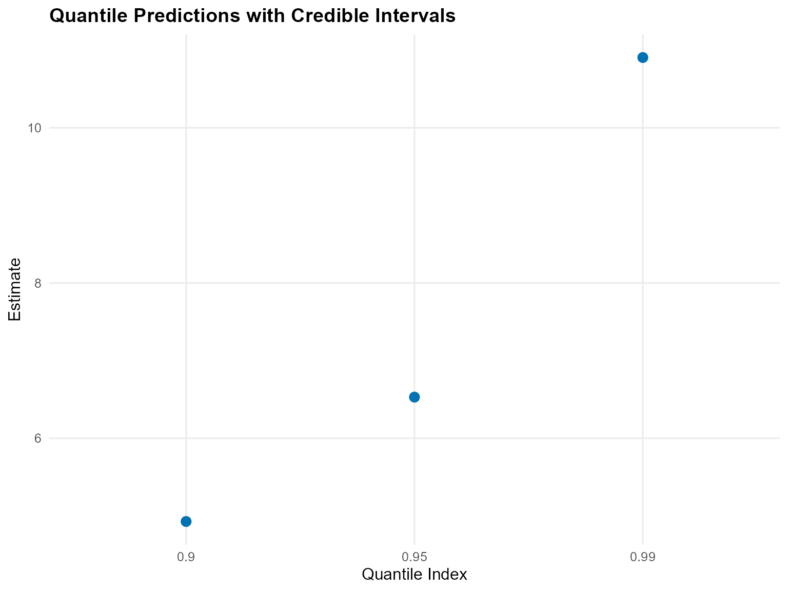
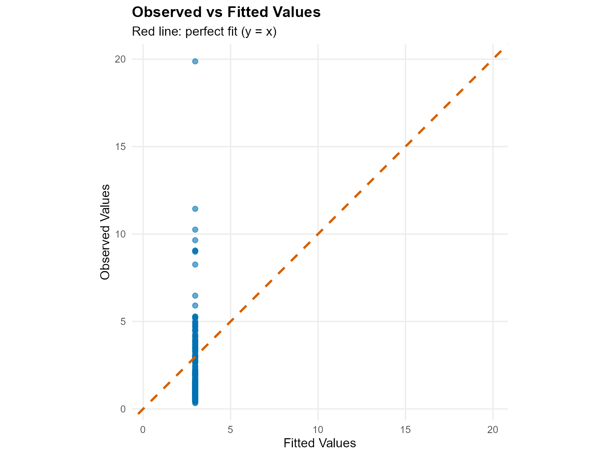
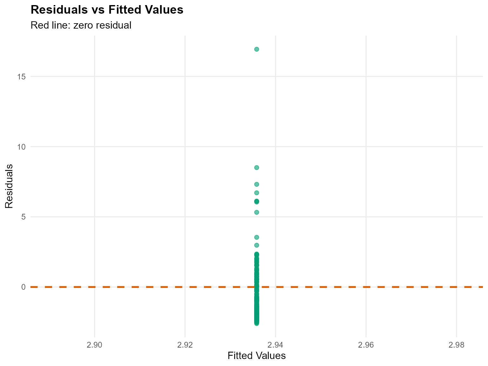
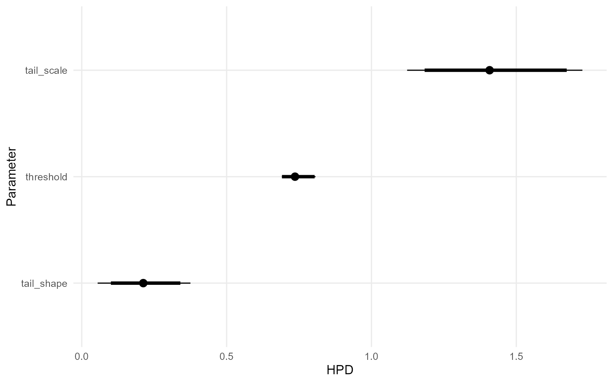
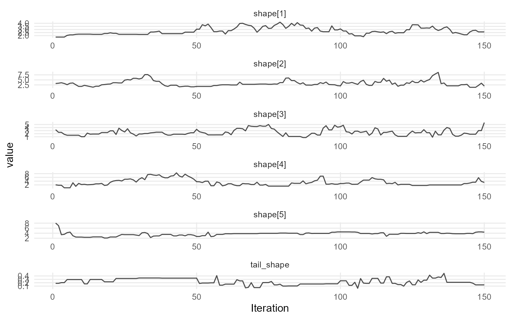
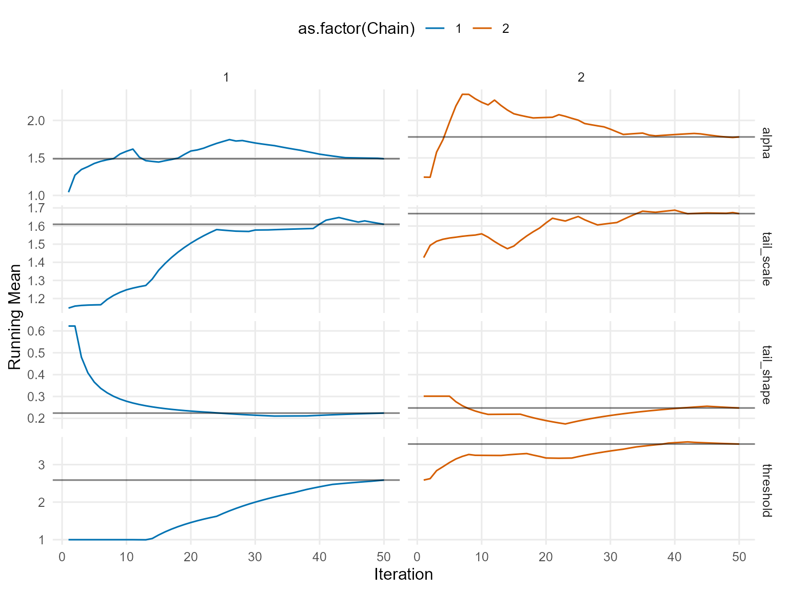

9. Unconditional DPmixGPD with Stick-Breaking Backend
Source:vignettes/legacy/v09-unconditional-DPmixGPD-SB.Rmd
v09-unconditional-DPmixGPD-SB.RmdLegacy vignette (for the website / historical notes). These files may not match the current exported API one-to-one. Last verified: 2026-01-18.
For the up-to-date workflow, see the main package vignettes (Introduction, Model Spec, MCMC Workflow, Unconditional/Conditional/Causal, Backends, S3 Reference).
Theory (brief)
The stick-breaking backend truncates the DP mixture to a fixed number of components, while the GPD tail handles extreme values beyond a threshold. This combination yields flexible bulk fit and stable tail inference.
Unconditional DPmixGPD: Stick-Breaking (SB) Backend with Tail Augmentation
Purpose: Demonstrate the stick-breaking backend
(components = J) while augmenting the extreme tail with a
GPD. This mirrors the CRP+GPD pipeline (v06) but highlights the
fixed-truncation behavior for bulk components.
Data Setup
# Tail-heavy data
data("nc_pos_tail200_k4")
y_tail <- nc_pos_tail200_k4$y
summary_tbl <- tibble(
statistic = c("N", "Mean", "SD", "Min", "Max"),
value = c(length(y_tail), mean(y_tail), sd(y_tail), min(y_tail), max(y_tail))
)
df_data <- data.frame(y = y_tail)
p_raw <- ggplot(df_data, aes(x = y)) +
geom_histogram(aes(y = after_stat(density)), bins = 40, fill = "darkorange", alpha = 0.6, color = "black") +
geom_density(color = "darkred", linewidth = 1) +
labs(title = "Tail-Designed Data", x = "y", y = "Density") +
theme_minimal()
print(p_raw)
| statistic | value |
|---|---|
| N | 200.0000 |
| Mean | 2.3340 |
| SD | 2.3000 |
| Min | 0.3283 |
| Max | 19.8700 |
Threshold Selection
thresholds <- quantile(y_tail, c(0.70, 0.75, 0.80, 0.85))
u_threshold <- thresholds["80%"]
ggplot(df_data, aes(x = y)) +
geom_histogram(aes(y = after_stat(density)), bins = 40, fill = "skyblue", alpha = 0.6, color = "black") +
geom_vline(xintercept = u_threshold, linetype = "dashed", color = "black") +
labs(title = paste("Threshold at", round(u_threshold, 2)), x = "y", y = "Density") +
theme_minimal()
Model Specification & Bundle
This follows the same structure as the SB bulk-only vignette
(v05): build a bundle with
build_nimble_bundle(), run MCMC, then use the S3
predict() + plot() helpers. Compared with
v06 (CRP+GPD), here we keep the
stick-breaking backend and use a Gamma
bulk kernel with a lognormal threshold prior, then contrast it with a
bulk-only Laplace fit.
bundle_sb_gpd <- build_nimble_bundle(
y = y_tail,
kernel = "gamma",
backend = "sb",
GPD = TRUE,
components = 5,
param_specs = list(
gpd = list(
threshold = list(
mode = "dist",
dist = "lognormal",
args = list(meanlog = log(max(u_threshold, .Machine$double.eps)), sdlog = 0.25)
)
)
),
mcmc = mcmc
)Running MCMC
fit_sb_gpd <- load_or_fit("v09-unconditional-DPmixGPD-SB-fit_sb_gpd", run_mcmc_bundle_manual(bundle_sb_gpd))
summary(fit_sb_gpd)MixGPD summary | backend: Stick-Breaking Process | kernel: Gamma Distribution | GPD tail: TRUE | epsilon: 0.025
n = 200 | components = 5
Summary
Initial components: 5 | Components after truncation: 4
WAIC: 663.354
lppd: -312.156 | pWAIC: 19.521
Summary table
parameter mean sd q0.025 q0.500 q0.975 ess
weights[1] 0.391 0.078 0.280 0.375 0.538 2.359
weights[2] 0.269 0.039 0.205 0.265 0.353 9.042
weights[3] 0.180 0.052 0.087 0.190 0.260 2.671
weights[4] 0.129 0.052 0.054 0.120 0.226 6.368
alpha 1.904 0.812 0.547 1.864 3.536 50.116
tail_scale 1.423 0.163 1.123 1.408 1.728 28.375
tail_shape 0.230 0.090 0.055 0.212 0.375 9.136
threshold 0.746 0.033 0.691 0.736 0.807 1.926
shape[1] 2.889 1.072 1.737 2.566 4.782 24.412
shape[2] 3.237 1.196 1.542 3.177 5.834 13.145
shape[3] 3.205 1.131 1.605 2.958 6.149 55.820
shape[4] 2.952 0.958 1.340 2.964 4.629 27.463
scale[1] 1.401 0.901 0.279 1.148 3.439 11.876
scale[2] 1.648 1.258 0.253 1.474 4.441 39.134
scale[3] 1.367 1.236 0.253 0.975 4.790 54.823
scale[4] 1.420 1.054 0.239 1.166 3.851 34.189
params_sb_gpd <- params(fit_sb_gpd)
params_sb_gpdPosterior mean parameters
$alpha
[1] 1.904
$w
[1] 0.3914 0.2692 0.1801 0.1294
$shape
[1] 2.889 3.237 3.205 2.952
$scale
[1] 1.401 1.648 1.367 1.420
$tail_scale
[1] 1.423
$tail_shape
[1] 0.2303Posterior Predictions
y_grid <- seq(0, max(y_tail) * 1.3, length.out = 300)
pred_density <- predict(fit_sb_gpd, y = y_grid, type = "density")
plot(pred_density)
y_surv <- seq(u_threshold, max(y_tail) * 1.1, length.out = 60)
pred_surv <- predict(fit_sb_gpd, y = y_surv, type = "survival")
plot(pred_surv)
quant_probs <- c(0.90, 0.95, 0.99)
pred_quant <- predict(fit_sb_gpd, type = "quantile", index = quant_probs, interval = "credible")
plot(pred_quant)
Tail vs Bulk Comparison
bundle_sb_bulk <- build_nimble_bundle(
y = y_tail,
kernel = "laplace",
backend = "sb",
GPD = FALSE,
components = 5,
mcmc = mcmc
)
fit_sb_bulk <- load_or_fit("v09-unconditional-DPmixGPD-SB-fit_sb_bulk", run_mcmc_bundle_manual(bundle_sb_bulk))
bulk_quant <- predict(fit_sb_bulk, type = "quantile", index = quant_probs)
t_quant <- predict(fit_sb_gpd, type = "quantile", index = quant_probs)
bind_rows(
bulk_quant$fit %>% mutate(model = "Bulk-only"),
t_quant$fit %>% mutate(model = "Bulk + GPD")
) %>%
select(any_of(c("model", "index", "estimate", "lwr", "upr", "lower", "upper"))) %>%
mutate(across(where(is.numeric), ~ round(.x, 3))) %>%
kable(caption = "Quantiles: Bulk-only vs GPD-augmented", align = "c") %>%
kable_styling(bootstrap_options = c("striped", "hover"), full_width = FALSE, position = "center")| model | index | estimate | lower | upper |
|---|---|---|---|---|
| Bulk-only | 0.90 | 6.821 | 5.393 | 8.681 |
| Bulk-only | 0.95 | 8.712 | 6.995 | 10.327 |
| Bulk-only | 0.99 | 14.107 | 11.113 | 17.966 |
| Bulk + GPD | 0.90 | 4.792 | 4.148 | 5.494 |
| Bulk + GPD | 0.95 | 6.579 | 5.530 | 7.690 |
| Bulk + GPD | 0.99 | 12.141 | 8.919 | 15.903 |
plot(bulk_quant)
plot(t_quant)
Residuals & Diagnostics


plot(fit_sb_gpd, family = "traceplot")
=== traceplot ===
plot(fit_sb_gpd, params = "shape", family = "traceplot")
=== traceplot ===
plot(fit_sb_gpd, params = "scale", family = "caterpillar")
=== caterpillar ===
Key Takeaways
- Stick-breaking truncation fixes the number of bulk components but still flexibly models the tail via GPD.
- Posterior
predict()+plot()workflows visualize densities, survival probabilities, and posterior-mean extreme quantiles. - Comparing bulk-only vs GPD-augmented quantiles reveals how tail augmentation shifts the 95–99% levels.
- Next: conditional DPmix (v08–v11) to explore covariate effects before moving to causal regimes.